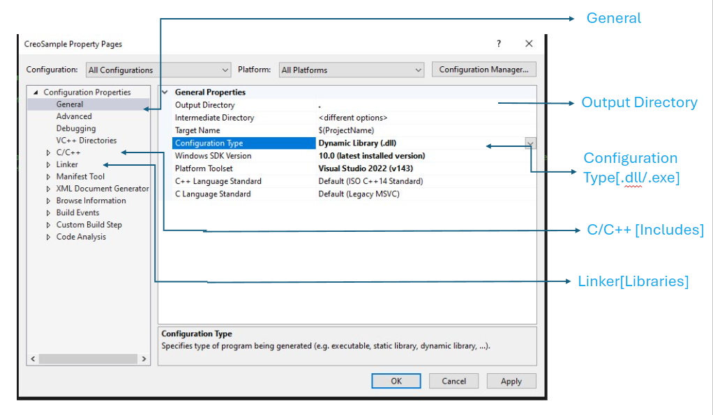

Introduction to Creo Parametric TOOLKIT
Creo Parametric TOOLKIT, developed by Parametric Technology Corporation (PTC), serves as a robust customization toolkit for enhancing Creo Parametric capabilities. It empowers users and third-party developers to extend the functionalities of Creo Parametric by leveraging the C programming language.Read more...
By seamlessly integrating custom applications developed using Creo Parametric TOOLKIT, users can tailor Creo Parametric to meet specific design and engineering requirements.This toolkit offers a comprehensive library of C functions, enabling safe and controlled access to the Creo Parametric database and applications. With Creo Parametric TOOLKIT as the primary application programmer's interface (API) for Creo Parametric, developers can efficiently interact with and manipulate Creo Parametric's features and functionalities, thus enhancing productivity and enabling advanced customization.
Creo 10 Upgrade
PTC has launched Creo 10, boasting enhancements aimed at improving design efficiency and innovation. Key features include:Read more...
Usability and Productivity: Creo 10 introduces multibody enhancements, improved modeling tools, and streamlined capabilities for easier design organization and understanding.
Composites Design and Manufacturing: New features allow designing with composite materials, including ply and core design, simulation of draping, and automated pattern creation.
Design for Electrification: Creo 10 offers tools for creating, managing, and collaborating on harness assemblies, along with extended ECAD capabilities.
Design for Ergonomics: Enhanced manikins and libraries facilitate designing for user uniqueness, incorporating improved visual field reflection analysis.
Model-Based Definition (MBD) and Detailing: Updates include enhanced annotations, streamlined GD&T workflows, and improved EZ Tolerance usability.
Simulation-Driven Design and Generative Design: Creo 10 enhances simulation capabilities, including contact simulation options and improvements in fluid and structural analysis. Generative design features rotational symmetry, mass point constraints, and remote loads.
Advances in Additive and Subtractive Manufacturing: Creo 10 introduces beam-based and formula-driven lattices for additive manufacturing, along with improvements in high-speed milling.
Introducing Creo+: PTC launches Creo+, a SaaS product offering Creo's functionality with cloud-based tools for collaboration, license management, and deployment.
Overall, Creo 10 and Creo+ aim to enhance design processes, collaboration, and innovation, offering a suite of tools for efficient and effective product development.
BUILD PROCESS
1. Begin by accessing the make_basic file located at
(Creo_APP_DIR)/Common Files/protoolkit/x86e_win64/obj.Read more...
In the make_basic file, you'll find essential configurations:
- #includes File Path: Contains all necessary C/C++ include files.
- #Compiler Flags: Includes preprocessor directives required for compilation.
- #Libraries: Lists linker libraries needed for the project (usually with a .lib extension).
2. Open Microsoft Visual Studio and create a new project.
3. Choose C++ as the programming language.
4. Select the project type based on your needs, whether it's a Dynamic Link Library (DLL) or Executable(EXE).

5. Configure the project for Debug mode and select the x64 platform configuration for 64-bit compatibility.
6. Specify the binary location directory and choose the configuration type (DLL/EXE).
7. Set the Creo include directories to include all necessary toolkit header files:
(Creo_APP_DIR)/Common Files/protoolkit/includes;
(Creo_APP_DIR)/Common Files/protoolkit/protk_appls/includes;
8. Add the following preprocessor directives:
_WSTDIO_DEFINED;
PRO_USE_VAR_ARGS;
9. Under Code Generation, set the Runtime Library to Multi-threaded (/MT).
10. Under Linker, set the Additional Library Directories to:
(Creo_APP_DIR)\Common Files\protoolkit\x64e_win64\obj
11. In the Input section, set the Additional Dependencies to include the following libraries:
protoolkit_NU.lib;pt_asynchronous.lib;ucore.lib;udata.lib;kernel.lib;user32.lib;wssock32.lib;advapi32.lib;mpr.lib;
Asynchronous & Synchronous
Creo offers two operational modes for executing applications: synchronous and asynchronous.Read more...
Synchronous Mode
In synchronous mode, Creo Parametric initiates application execution based on data stored in the registry file. There are two sub-modes within synchronous mode:
Synchronous DLL: This mode involves direct function calls for interaction. The application is launched and managed by the Pro/Engineer application, leveraging Pro/Engineer resources. It starts with a user_initialize entry point and concludes with user_terminate.
Synchronous Multi-Process (spawned): Here, interaction occurs via an Inter-Process messaging system. The application is launched as a separate entity by the Pro/Engineer application, with the main entry point.
Note: Each process within this mode can communicate by sending messages to one another, typically requesting specific operations. However, each process must wait for a return message confirming completion of the operation, resulting in one process always being in a wait state.
Asynchronous Mode
A synchronous Mode enables simultaneous operations between the Creo Parametric Toolkit application and Creo Parametric through a multiprocess setup. The application initializes independently of Creo Parametric, then either launches or establishes a connection with a Creo Parametric process.
Simple Asynchronous: In Simple Asynchronous Mode, there's no mechanism for handling requests from Creo Parametric to the Creo Parametric Toolkit application. Consequently, Creo Parametric cannot directly invoke functions within the toolkit application. Instead, both processes operate concurrently.
Fully Asynchronous: In Fully Asynchronous Mode, the setup remains similar to Simple Asynchronous Mode, but with a crucial difference in how the Creo Parametric Toolkit application manages requests from Creo Parametric. Here, the application must incorporate a control loop to actively monitor and respond to messages received from Creo Parametric. It's worth noting that asynchronous applications won't be visible in the auxiliary applications dialog box.
Setting Up An Asynchronous Application
To enable communication between your asynchronous application and Creo Parametric, you need to configure the environment variable PRO_COMM_MSG_EXE. Read more...
This variable should point to the complete path of the pro_comm_msg.exe executable, located at (creo_loadpoint)\Common Files\obj\pro_comm_msg.exe. You can set PRO_COMM_MSG_EXE in the Environment Variables section within the System settings accessed through the Control Panel.The environment variable RPC_TIMEOUT establishes the maximum duration within which remote procedure calls must be carried out. It operates in seconds, with a default setting of 2000 seconds. In case the application exceeds this time limit without finishing execution, it returns the error PRO_TK_COMM_ERROR. If your application demands additional time for execution, you should adjust this variable to a higher value.
Create New CAD Files
Please follow the steps outlined below to generate a new CAD file in Creo.Read more...
Get the template path:
- Before starting a new CAD file, locate the template file you'll use. Templates contain predefined settings like units, layers, and components, streamlining the design process.
Load the template to Creo session:
- Once you find the template, open it within Creo by navigating to its location. This action loads the template into the Creo environment for use.
Use ProMdlFiletypeLoad() to load the object:
This function is employed to bring an object into the current Creo session from various locations, such as disk paths, workspace paths, or commonspace paths.
Rename the file to the required part number:
- After loading the template, rename the file to match the specific part number or name associated with the new CAD file. This step maintains organization and clarity in your project.
Rename the file with ProMdlRename:
Once the object is loaded, use ProMdlRename to change its name. This function allows you to update the object's name to better suit your project needs.
Create or Retrieve a window with ProObjectwindowMdlnameCreate:
- This function retrieves a window and attaches the object to it. If the window is already open with the object attached, it returns the window ID. It helps manage the workspace efficiently.
Activate the window:
- Ensure the correct window or workspace is active for working on the new CAD file. Activating the window ensures any actions or commands apply to the correct document in Creo.
Activate the window using ProWindowActivate:
Ensure the appropriate window is active for working on the CAD file. Activating the window allows you to interact with the CAD model effectively within Creo.
Following these steps, you can efficiently create new CAD files in Creo
Debugging Toolkit Applications
Debugging refers to the process of identifying and resolving errors, bugs, or issues within a software application or program. It involves systematically analyzing the code, execution flow, and runtime behavior to pinpoint the root cause of unexpected behaviors or failures. Debugging typically includes techniques such as stepping through code, inspecting variable values, logging output, and using debugging tools to track down and fix issues. Read more...
Debugging an Interactive Dll: Debugging an Interactive DLL involves initiating Creo Parametric with the DLL registered and loaded, then attaching the debugger to the process xtop.exe. Breakpoints should be set within the functions you intend to debug.
Debugging a Multi-Process Application:
For Synchronous Spawn Mode: Commence Creo Parametric with the application registered and launched. Attach the debugger to the application process and set breakpoints within the desired functions.
For Asynchronous Spawn Mode: Initiate the application from the debugger, setting a breakpoint to halt execution before the call to ProEngineerStart() or ProEngineerConnect(). This allows for debugging at the designated debug point.
Creo Coordinate System
Creo Parametric and Creo Parametric TOOLKIT use the following coordinate systems:Read more...
Solid Coordinate System: Utilized in Creo Parametric for 3D modeling, describing geometry in Cartesian coordinates for parts and assemblies. It visualizes surfaces, edges, and assembly member positions and orientations. Solid coordinates correspond to dimension values seen by users and are integral to geometry-based functions in Creo Parametric TOOLKIT.
Screen Coordinate System: Acts as an intermediary for 2D positioning within the Creo Parametric window, facilitating graphics rendering and user interactions. It transforms points to screen pixels, maintaining consistency even with view adjustments like zoom and pan.
Window Coordinate System: Similar to screen coordinates but tailored for screen resolution and adjustments like zoom and pan. It maps models from the screen coordinate system before rendering to screen pixels, ensuring accurate representation regardless of view modifications.
Drawing Coordinate System: Employed for 2D positioning on drawing sheets, measured in drawing units. It describes positions relative to the bottom-left corner, crucial for precise drafting tasks, and often utilized by Creo Parametric TOOLKIT functions handling drawings.
Drawing View Coordinate System: Used to locate entities within a drawing view, aiding accurate placement of elements within drawings for effective communication of design intent.
Assembly Coordinate System: Establishes positions, orientations, and geometry of parts, subassemblies, and datum features within an assembly. Each assembly member maintains its solid coordinate system, vital for analyzing subassembly geometry relative to the parent assembly.
Datum Coordinate System: A user-defined coordinate system within parts or assemblies, essential for describing geometry relative to specific reference points, often utilized in Creo Parametric TOOLKIT applications.
Section Coordinate System: Unique coordinate system for each sketch, facilitating entity placement within the sketch and features. Sketches used in features may have a different coordinate system from the solid model, ensuring accurate geometry representation.